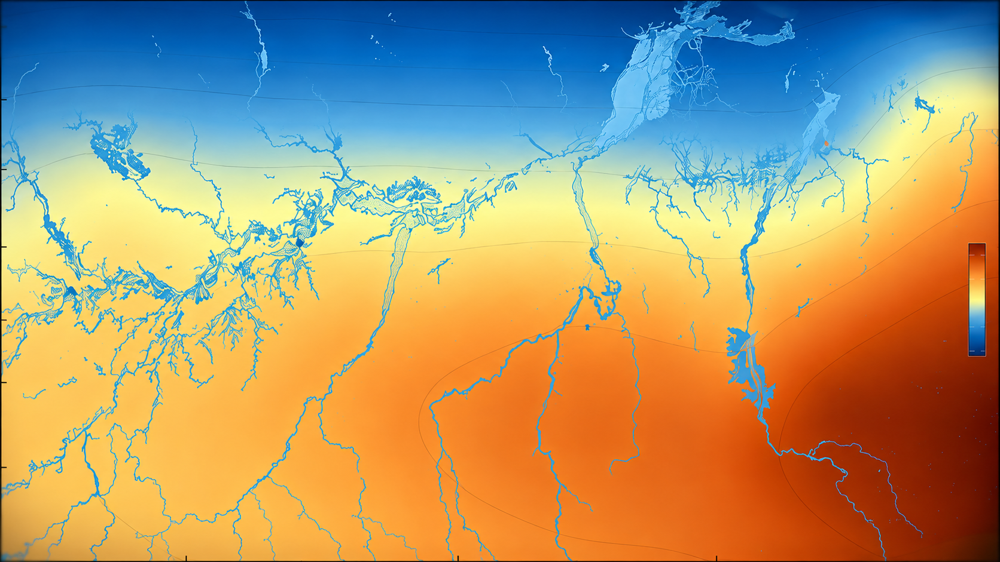

Spatial research overview01Statistical Modelling of Spatial Extremes in Complex Systems
How can we model spatial extremes when a single marginal shape is not flexible enough? My MSc dissertation develops a Bayesian hierarchical spatial model with Bimodal Generalized Extreme Value (BGEV) marginals, Gaussian spatial structures and MCMC inference, with an application to extreme events observed in the Amazon.
BGEV · Gaussian spatial fields · HMC/NUTS in Stan
View project